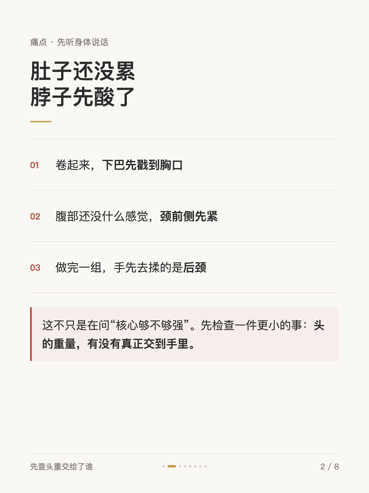
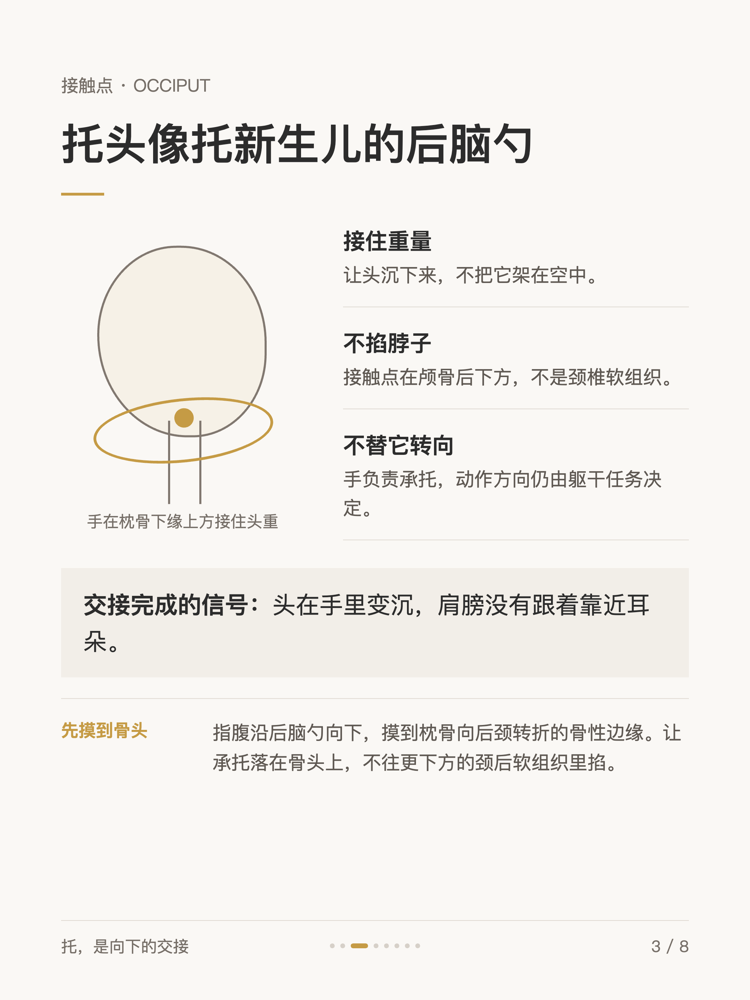
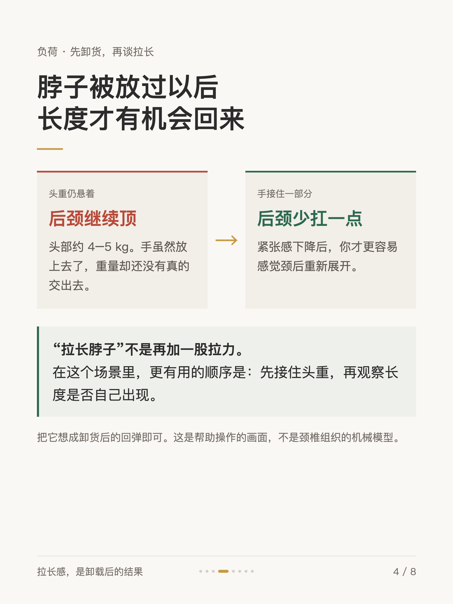
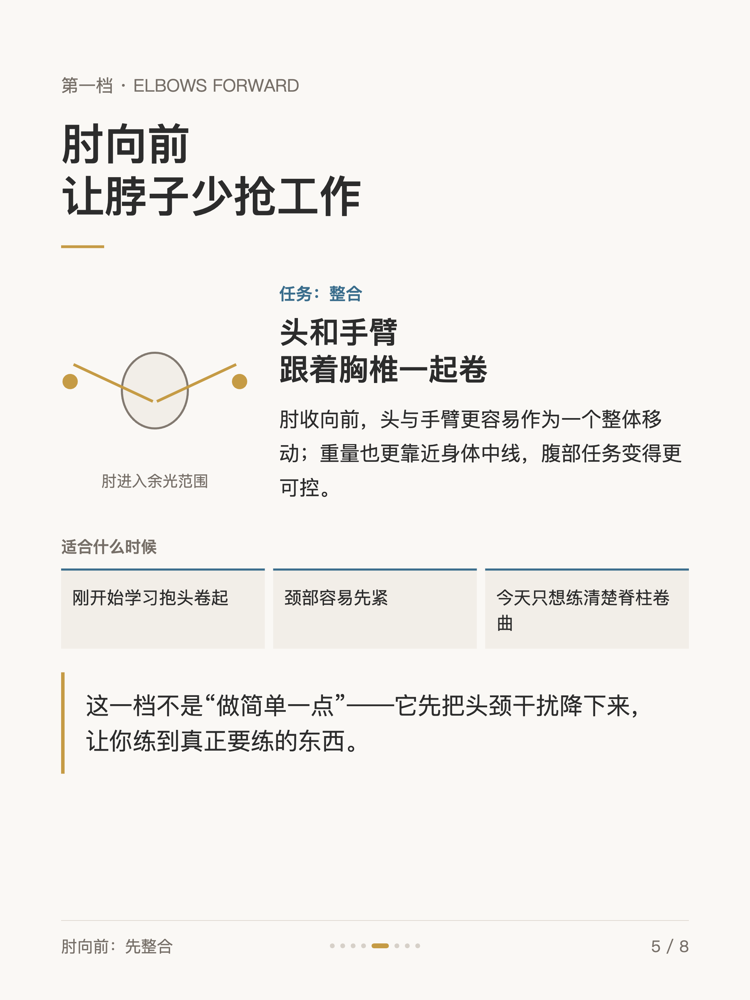
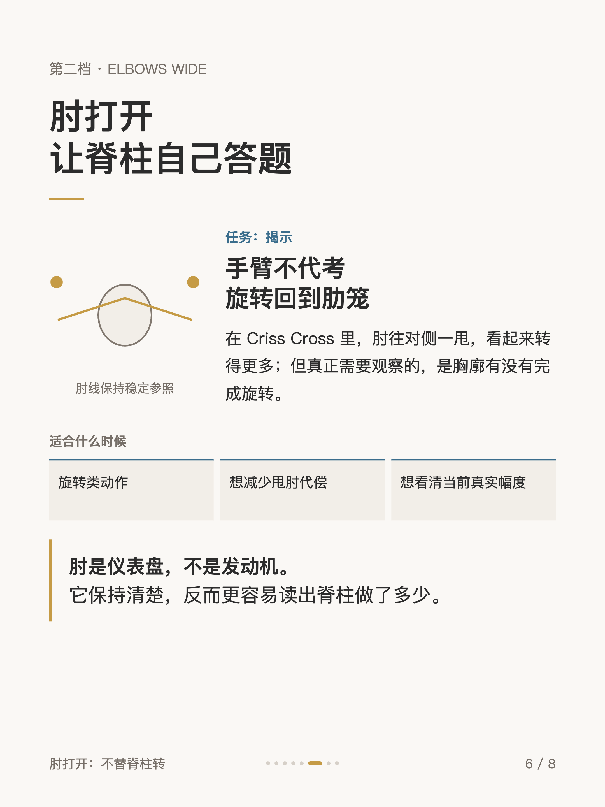
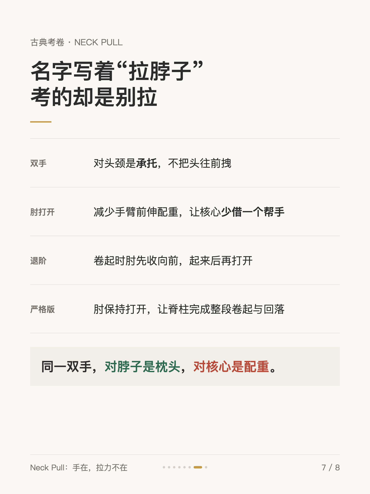
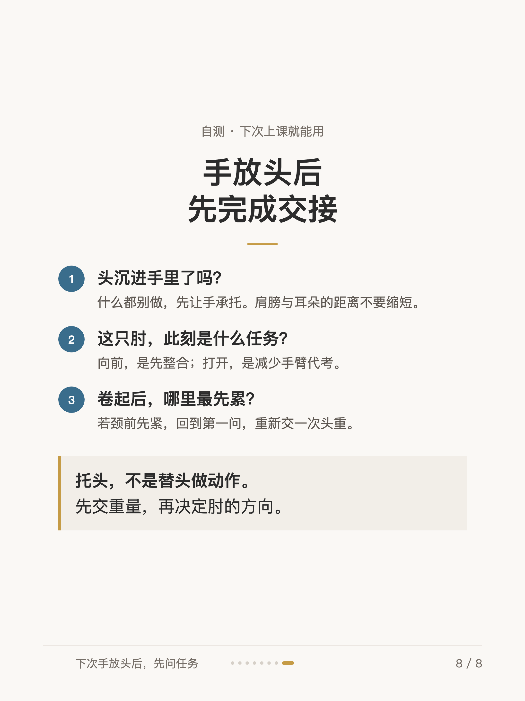

普拉提小细节 #003
后脑勺：被忽略的第一块砖

1 / 8

2 / 8

3 / 8

4 / 8

5 / 8

6 / 8

7 / 8

8 / 8
← 左右滑动浏览全部卡片 →
手放头后，脖子还是酸——先检查一件更小的事：头的重量，有没有真正交到手里。托头像托新生儿的后脑勺：手在枕骨下缘上方接住头重，不掐脖子，不替它转向。先卸货，长度才有机会自己回来。
这组卡片拆解了抱头的两档任务——肘向前是先整合，肘打开是不替脊柱转——以及 Neck Pull 这张古典考卷：名字写着拉脖子，考的却是别拉。